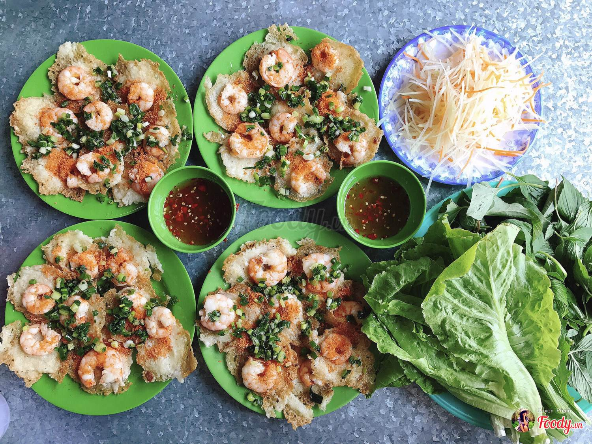
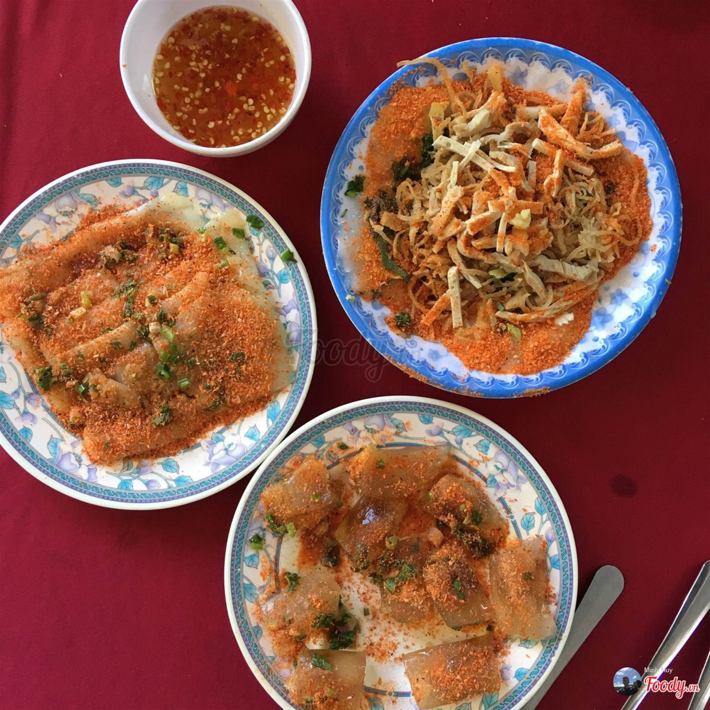
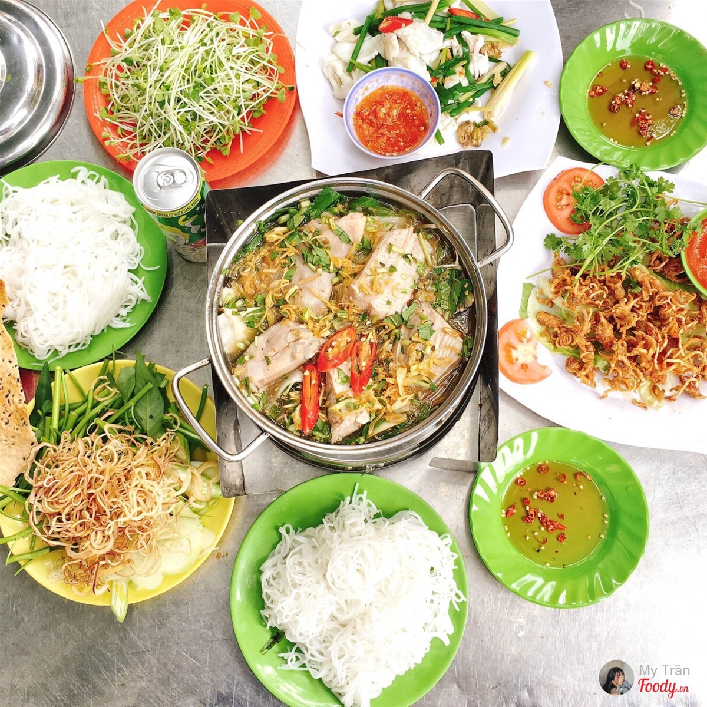
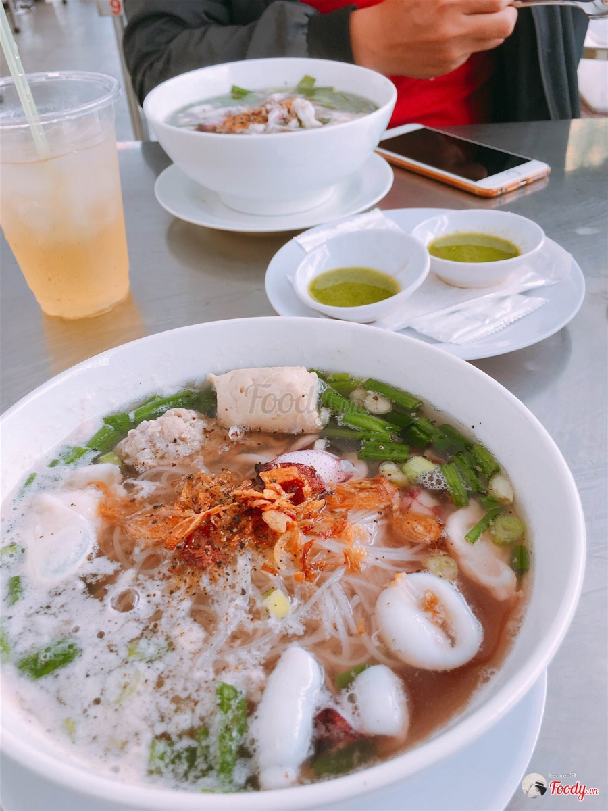
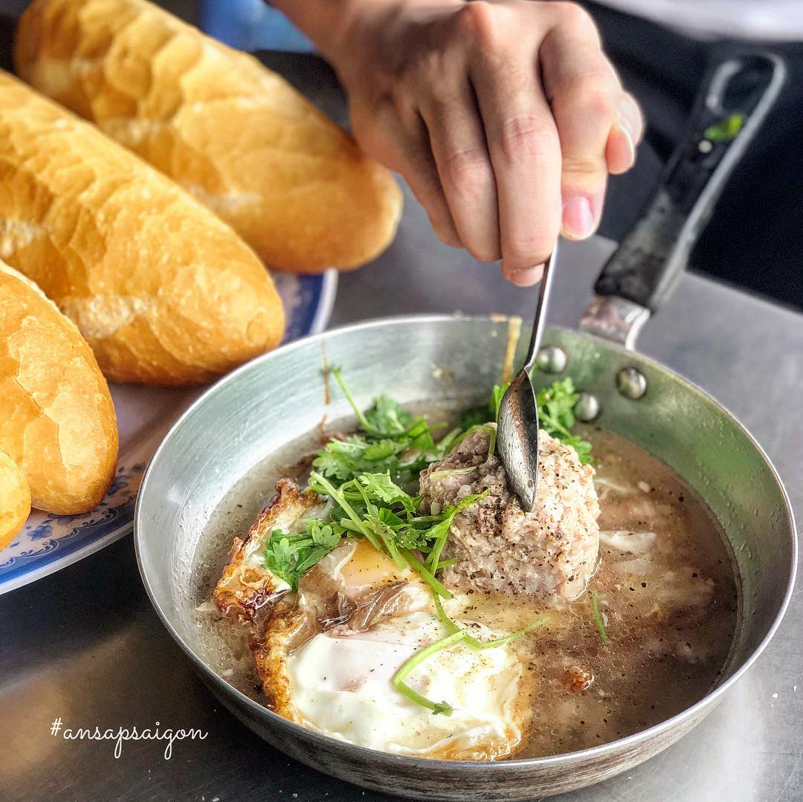
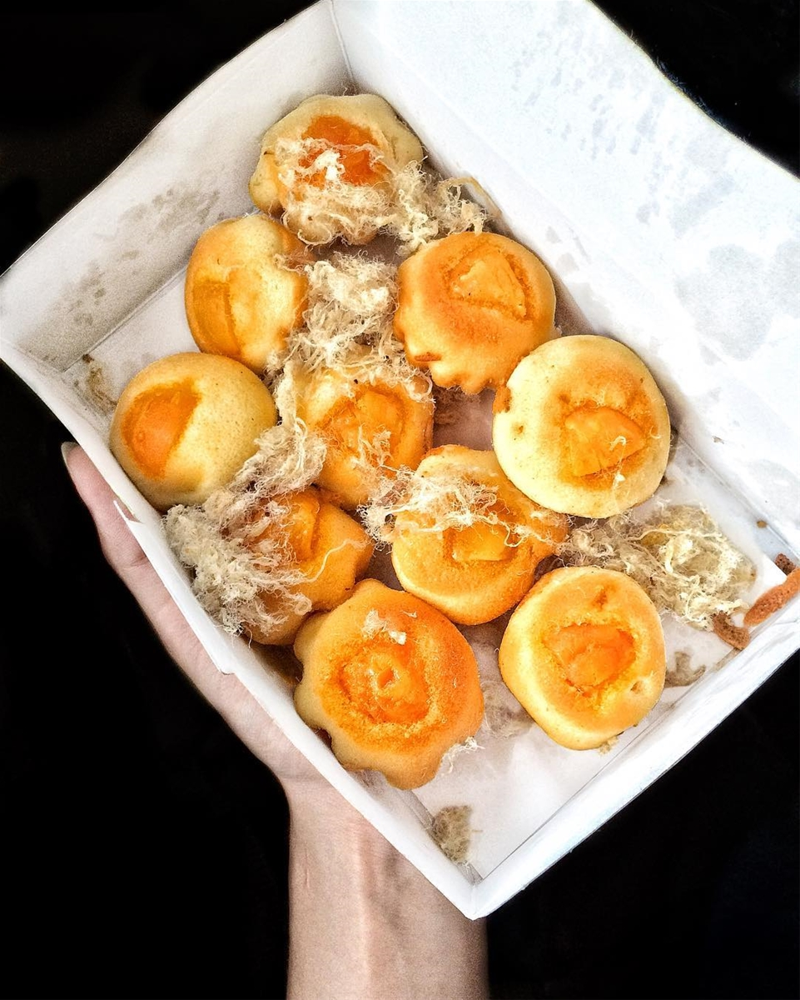
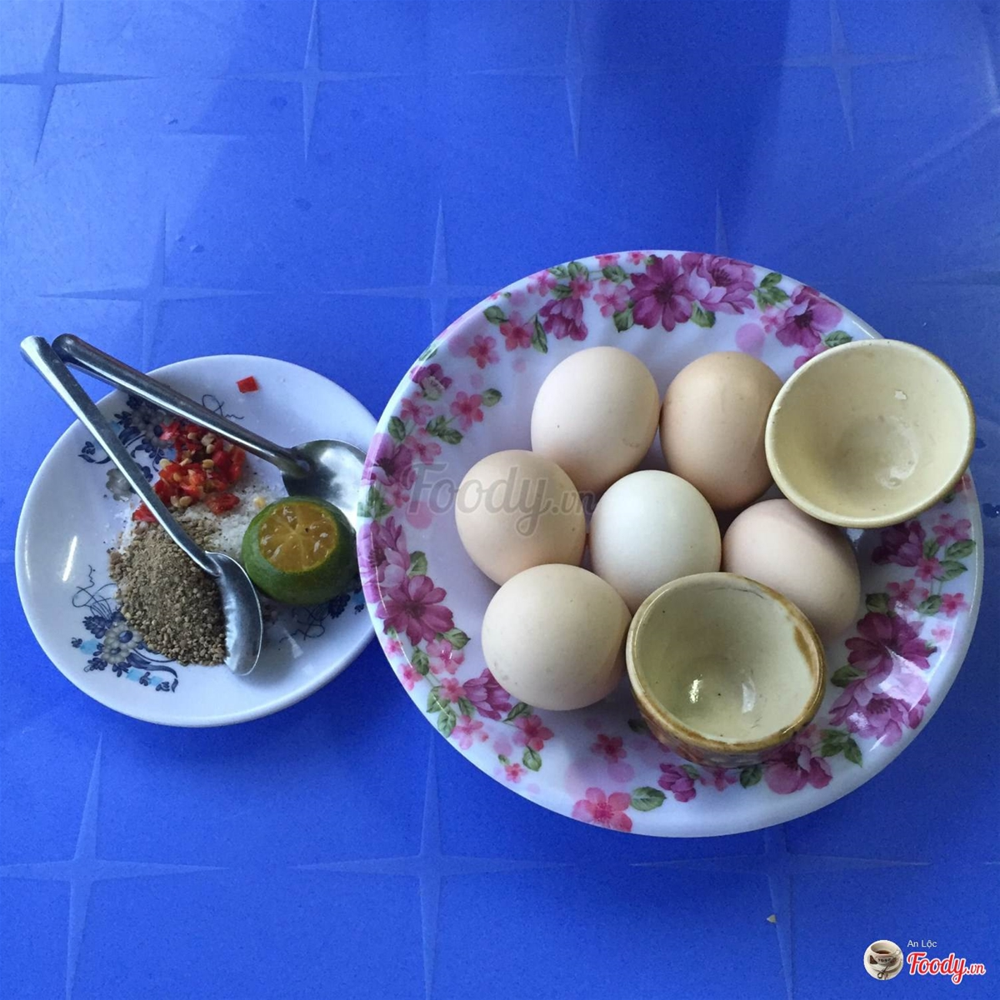
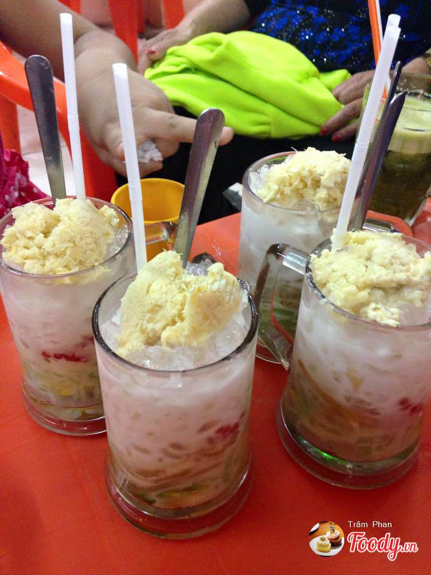
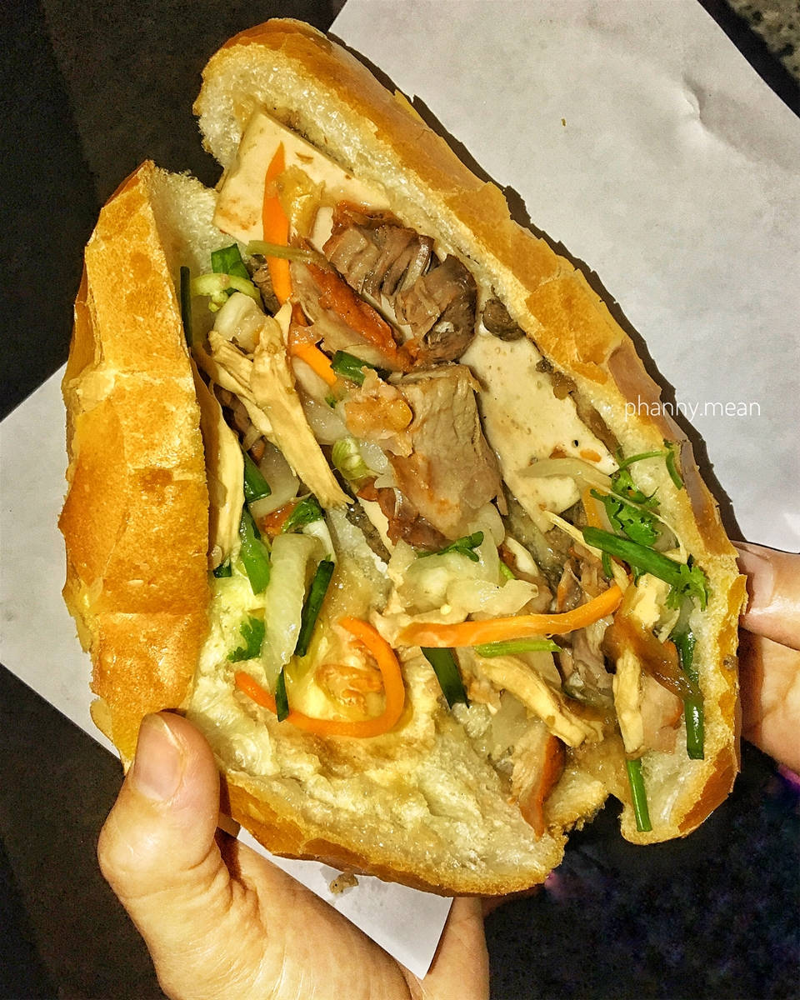
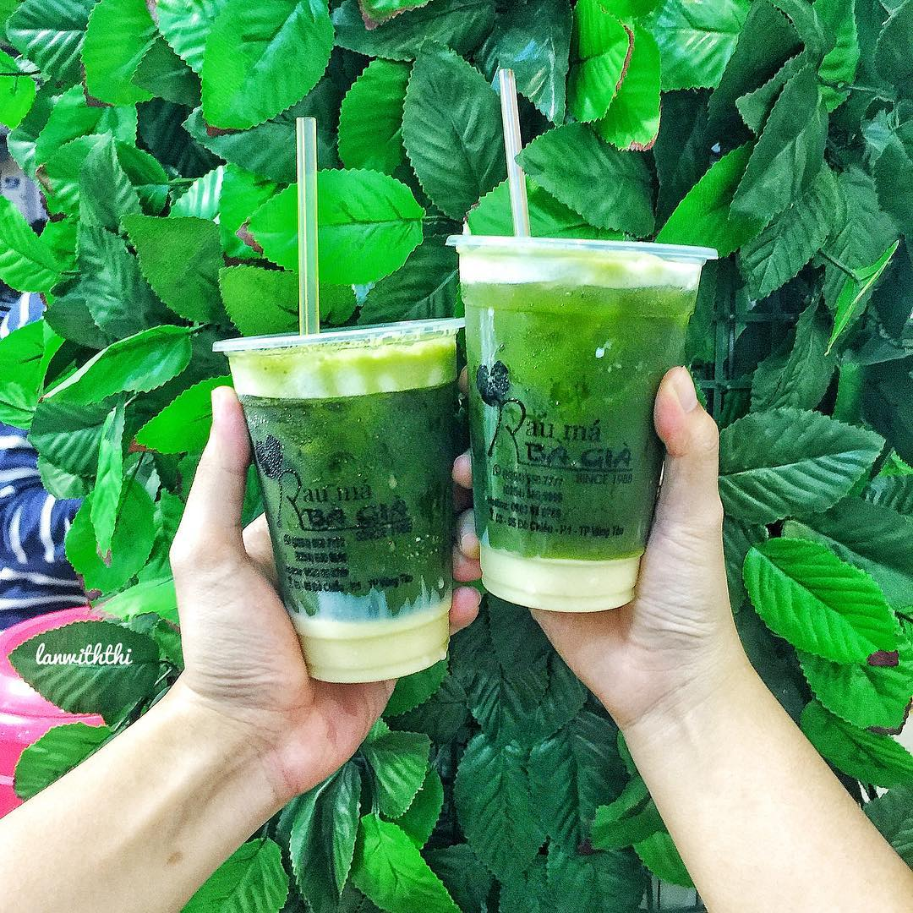

1. Bánh Hoàng Hoa Thám
Thứ bảy - 11/06/2019 09:23
Ở đây chỉ có bánh nhân tôm thôi và tôm tươi múp máp nên ăn đã lắm.
Thêm nữa rau sống rất nhiều và tươi, nước mắm vừa ăn.
Địa Chỉ: 19 Hoàng Hoa Thám, P.3, Tp.Vũng Tàu
Giờ Mở Cửa: 09:00 - 21:00
Giá: 30.000đ - 55.000đ

@damanfood
2. Bánh bèo Tuyết Mai
Thứ bảy - 11/06/2019 09:23
Món bánh bèo bì này cũng đốn tim không biết bao nhiêu tín đồ mê ăn uống.
Bánh bèo được hấp mềm, rồi thêm một lớp tôm, thịt và đặc biệt là lớp bì rất vừa miệng.
Chan thêm ít nước mắm là số dzách luôn nha.
Địa Chỉ: 9 Phan Chu Trinh, P.2, Tp.Vũng Tàu
Giờ Mở Cửa: 09:00 - 22:00
Giá: 30.000đ - 40.000đ

@damanfood
3. Lẩu cá đuối
Thứ bảy - 11/06/2019 09:23
Nồi lẩu cá đuối lớn 200k, gọi nước và rau thêm, mì thêm. Lẩu ăn bao ngon nha, nước đậm vị lắm,
được cái không gian rộng và không ồn ào nên ngồi ăn rất thoải mái. Gọi thêm vài món ăn vui miệng như ếch xào sả ớt,
gỏi xoài khô mực.. ăn cho vui miệng. Giá các dĩa tầm 80k/ 1 dĩa.
Địa Chỉ: 26 Nguyễn Trường Tộ, P.3, Tp.Vũng Tàu
Giờ Mở Cửa: 09:00 - 00:00
Giá: 10.000đ - 300.000đ

@damanfood
4. Hủ tiếu mực
Thứ bảy - 11/06/2019 09:23
Đúng là thành phố biển nổi tiếng với những món ăn được chế biến từ hải sản. Món hủ tiếu mực này nổi tiếng
khắp Sài Thành rồi cập bến ở Vũng Tàu mình rồi nè. Hủ tiếu giòn giòn, dai dai ăn với nước dùng đậm đà rồi,
thêm mực tươi ngon nữa. Phải thử một lần qua trong đời mới cảm nhận hết được độ ngon của nó.
Địa Chỉ: 19 Hoàng Hoa Thám, P.3, Tp.Vũng Tàu
Giờ Mở Cửa: 07:00 - 22:00
Giá: 35.000đ - 58.000đ

@damanfood
5. Bánh mỳ xíu mại
Thứ bảy - 11/06/2019 09:23
Vũng Tàu nhà mình bữa nay cũng có bánh mỳ xíu mại rồi đó nha, không cần phải lên Đà Lạt mới có thể thưởng thức món này đâu.
1 phần bánh mì chảo có 2 trứng chiên opla, 1 viên xíu mại to đùng và 1 miếng pate. Kèm theo là nước mình ăn thì
giống nước lèo hủ tiếu, ăn ngon lắm. 1 phần như vậy là 20k, 1 ổ bánh mì 2k.
Địa Chỉ: 37 Cô Bắc, P.4, Tp.Vũng Tàu
Giờ Mở Cửa: 07:00 - 11:00 | 16:00 - 20:00
Giá: 20.000đ - 25.000đ

@ansapsaigon
6. Bánh bông lan trứng muối
Thứ bảy - 11/06/2019 09:23
Thêm một món mà bất cứ ai khi ghé Vũng Tàu đều phải thử qua hay mua về làm quà chính là bánh bông lan trứng muối.
Bánh bông lan mềm, thơm phức bên trên có thêm topping như zăm bông, trứng muối, càng ăn càng ghiền đó nha.
Tất cả đều đồng giá 25k/ 1 bịch. Có bông lan trứng muối phô mai và bông lan phô mai chà bông ngon, mình khoái 2 loại đó nhất.
Địa Chỉ: 19 Hoàng Hoa Thám, P.3, Tp.Vũng Tàu
Giờ Mở Cửa: 06:00 - 22:00
Giá: 25.000đ - 40.000đ

@maryderoux
7. Trứng gà lòng đào
Thứ bảy - 11/06/2019 09:23
Món ăn vừa rẻ lại vừa ngon này đã đốn tim bao nhiêu tín đồ mê ăn uống.
Chiều chiều lên đây leo núi, làm vài cái trứng gà thôi là thấy sướng rồi.
Hột gà ở đây nhỏ xíu, gọi là hột gà so, gà người ta nuôi lấy trứng luôn nên ăn rất
yên tâm. Nước mía lau ở đây cũng ngon, uống giống giống như nước sâm. Ai có dịp đi Vũng Tàu thì nên đi
leo núi rồi thử ngồi uống nước, ăn hột gà lòng đào là tuyệt cú mèo luôn. Hột gà 6k/ 1 trứng, sữa chua 6k/1 hủ,
nước sâm 5k/1 ly nha mấy chế.
Địa Chỉ: Vi Ba(Đường lên Núi Lớn), Tp.Vũng Tàu
Giờ Mở Cửa: 16:00 - 21:00
Giá: 5.000đ - 20.000đ

@damanfood
8. Chè Thái A Khèn
Thứ bảy - 11/06/2019 09:23
Tối tối dạo phố mà làm một ly chè Thái thì đã quá. Không chỉ có chè Thái không đâu mà còn nhiều món chè khác
thơm ngon chờ bạn thưởng thức nữa, nhìn những ly chè nhiều màu sắc là thấy hấp dẫn quá chừng luôn,
note lại ngay nào để có dịp phượt Vũng Tàu thì ghé ngay bạn nhé.
Địa Chỉ: 34 Đồ Chiểu, P.1, Tp.Vũng Tàu
Giờ Mở Cửa: 09:00 - 21:00
Giá: 10.000đ - 20.000đ

@damanfood
9. Bánh mỳ không tên
Thứ bảy - 11/06/2019 09:23
Chỗ này thì nổi tiếng miễn bàn rồi, tới khi nào cũng thấy quá trời người đứng chờ luôn.
Bánh mỳ được nướng giòn rụm, bên trong là thịt, chả, rau, nước sốt đậm đà. Ăn một ổ thôi là no cả buổi luôn.
Ngon rẻ như thế này mà không đông mới uổng đó.
Địa Chỉ: Đồ Chiểu(Ngã tư Đồ Chiểu-Lý Thường Kiệt), P.3, Tp.Vũng Tàu
Giờ Mở Cửa: 18:00 - 23:00
Giá: 15.000đ - 15.000đ

@phanny.mean
10. Rau má đậu xanh
Thứ bảy - 11/06/2019 09:23
Nhìn ly rau má đậu thôi là thấy thèm rồi. 1 lớp đậu xanh ở dưới, phía trên là rau má.
Khi uống trộn đều lên nhìn đã đã. Rau má đậu xanh 12k/ ly, ai thích thì có thế thử luôn món rau má dừa,
uống cũng lạ lạ, 13k/ 1 ly.
Địa Chỉ: 19 Hoàng Hoa Thám, P.3, Tp.Vũng Tàu
Giờ Mở Cửa: 00:01 - 02:00 | 08:00 - 23:59
Giá: 15.000đ - 33.000đ

@ansapsaigon